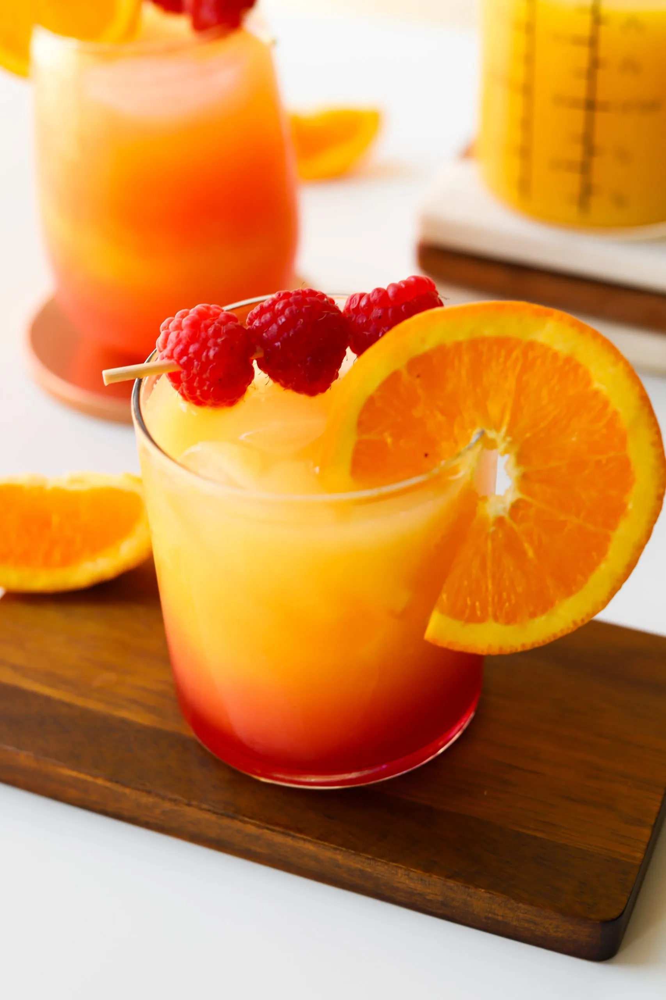
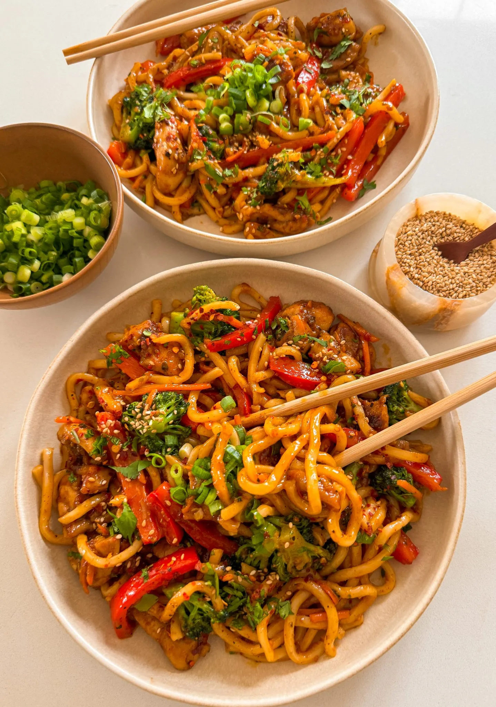

World's Best Cookbook
KUDOS BARS
TOTAL TIME: 1 HOUR
MAKES: 16 TO 18 BARS
AUTHOR Hajar Larbah

INGREDIENTS
GRANOLA BAR
- 3 cups Rice Krispies Cereal
- 1 cup quick oats
- 1/3 cup brown sugar
- 1/2 cup corn syrup
- 1 to 2 tablespoons peanut butter, optional
- 6 tablespoons unsalted butter
- pinch of salt
- 1 teaspoon vanilla extract
FOR ASSEMBLY
- 1/4 to 1/3 cup M&Ms
- 1 cup milk or semi-sweet chocolate, melted
INSTRUCTIONS
-
To a pot over medium heat, add brown sugar, corn syrup,
peanut butter, unsalted butter, salt, and vanilla
extract.
-
Bring to a boil and whisk together.
-
Once boiling, lower the heat and simmer for 4 to 5 minutes
until it is like a thick sauce.
-
In a large mixing bowl, combine Rice Krispies cereal with
quiuk oats.
- Pour the sauce over and combine with a rubber spatula.
-
Line a 9x9 pan with parchment paper. Add the mixture and
press down into one flat layer.
-
Pop in the fridge to set for about an hour or until cool to
the touch.
-
After it is set, remove from the pan. Cut in half down the
middle. Then cut each half into individual granola
bars.
-
Add chocolate to a microwave safe bowl. Microwave in 30
second intervals, mixing each time until completely
melted.
-
Dip the bottom of each bar in the chocolate and transfer to
a tray lined with parchment paper.
-
Drizzle the top of each bar with more chocolate and sprinkle
mini M&M's on top.
-
Pop in the fridge or freezer for about 10 to 20 minutes
until the chocolate is hard to the touch.
- Enjoy!
SUNRISE MOCKTAIL
TOTAL TIME: 10 MINUTES
MAKES: 4 DRINKS
AUTHOR Hajar Larbah

INGREDIENTS
GRANOLA BAR
- 2 cups orange juice
- 2 cups lemon-lime soda
- 1/2 cup grenadine syrup
- Ice
INSTRUCTIONS
- To a cup, add a bit of ice to the bottom
-
Then add a layer of orange juice so the cup is about 1/4 to
1/3 full.
-
On top of the orange juice, add the lemon-lime soda so the
cup is almost full to the top.
-
Finally, add a splash of grenadine syrup. It will travel to
the bottom of the cup to create the beautiful sunrise
look.
-
Garnish with a maraschino cherry or an orange wedge and
enjoy!
HONEY CHIPOTLE CHICKEN UDON
TOTAL TIME: 30 MINUTES
MAKES: 4 TO 5
AUTHOR Hajar Larbah

CHICKEN
-
1 pound boneless skinless chicken thighs, cut into small
pieces
- 2 tablespoons cornstarch
- 2 tablespoons olive oil
- 1 tablespoon unsalted butter
- 1 teaspoon chili powder
- 3/4 teaspoon salt, more or less to taste
- 1/2 teaspoon black pepper
- 1/2 teaspoon cumin
- 1/2 teaspoon coriande
- 1/2 teaspoon red pepper flakes, optional
SAUCE
- 4 tablespoons low-sodium soy sauce
- 2 tablespoons oyster sauce
- 2 tablespoons honey
- 2 tablespoons light brown sugar
- 1 tablespoon rice vinegar
- 2 to 3 tablespoons chipotle adobo paste
- 1 tablespoon minced garlic
- 2 tablespoons unsalted butter
STIR-FRY VEGGIES
- 1 tablespoon olive oil
- 1 red bell pepper, thinly sliced
- 1 cup broccoli, cut in small florets
- 1/2 cup thinly sliced carrots
- salt, to taste
- black pepper, to taste
OTHER
- 2 (7 ounce) packets of cooked udon
- chopped cilantro, for garnish
- chopped green onions, for garnish
- toasted sesame seeds
INSTRUCTIONS
-
To a mixing bowl, add the chopped chicken, cornstarch,
chili powder, salt, black pepper, cumin, coriander, and red
pepper flakes. Toss together to coat the chicken evenly in
the cornstarch and spices.
-
Heat a large frying pan over medium-high heat and add olive
oil and butter.
-
Add the coated chicken and fry for 7 to 8 minutes until
golden brown and fully cooked.
-
Remove the chicken from the pan, add a drizzle of olive oil,
add the veggies, and a sprinkle of salt and black
pepper.
-
Saute for 6 to 7 minutes until softened. Remove the veggies
from the pan and set aside.
-
To the same pan over medium heat, make the sauce. Add soy
sauce, oyster sauce, honey, brown sugar, rice vinegar,
chipotle adobo paste, minced garlic, and butter. Mix
together well and simmer for 2 to 3 minutes.
- Add back in the chicken, veggies, and udon noodles.